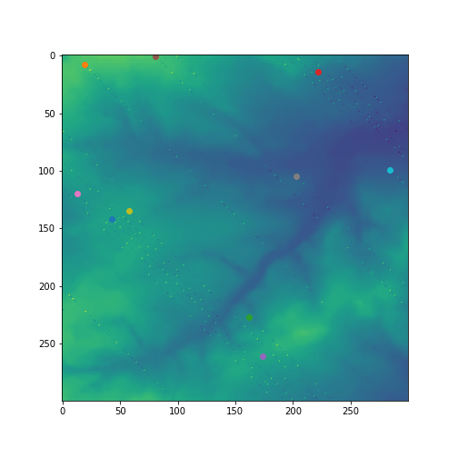

The exercise builds a sophisticated agent based model that allows for the interactions between the agents and the environment. The example of the output model is as shown in the figure below.
The final output of the model is the GUI the runs from the designed model. Executing the model with additional data to the model.